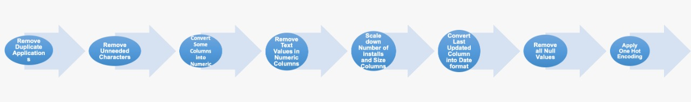
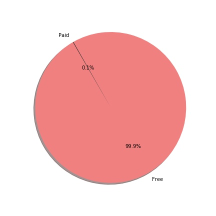
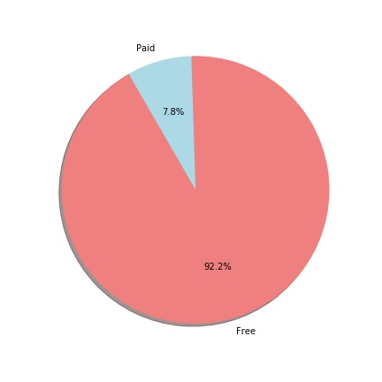
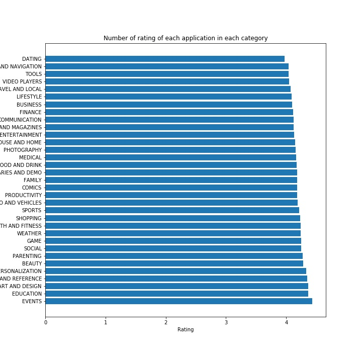

Mobile apps are everywhere. They are easy to create and can be lucrative. Because of these two factors, more and more apps are being developed. In this project, you will do a comprehensive analysis of the Android app market by comparing over ten thousand apps in Google Play across different categories. You'll look for insights in the data to devise strategies to drive growth and retention.
The goal of this notebook is to illustrate how we managed to apply data cleaning processes on the two given datasets and to find correlations between its attributes and how they can affect each other. Moreover, we will discuss some statistics and figures related to the datasets.
Columns description:
App: Application name
Category: Category the app belongs to
Rating: Overall user rating of the app (as when scraped)
Reviews: Number of user reviews for the app (as when scraped)
Installs: Number of user downloads/installs for the app (as when scraped)
Type: Paid or Free
Content Rating: Age group the app is targeted at - Children / Mature 21+ / Adult
Genres: An app can belong to multiple genres (apart from its main category). For eg, a musical family game will belong to Music, Game, Family genres.
Last Updated: Date when the app was last updated on Play Store (as when scraped)
Current Ver: Current version of the app available on Play Store (as when scraped)
Android Ver: Min required Android version (as when scraped)
Our Data Processing Pipeline

A. Investigating different app categories
1- How many unique categories are in the dataset?
Which of these categories have the fewest number of apps?
3- Which of these categories have the highest number of apps?
In the figure above, we can also observe that the categories FAMILY, GAMES and TOOLS have the highest number of apps which exceeds 500 apps.
#### 4- What type of categories do people mostly install?
B. Exploring Free and Paid apps
1- Which type of apps are mostly downloaded ? (whether free or paid depending on num. of installs ?

2- How many categories contain free and paid apps together?
3- How many free and paid applications?

4- What are the categories that contain the most expensive apps?
5- Which apps in the above categories have the more than 1000 installs?
6- How many categories contain free and paid apps together?
Investigating App categories
1. What are the top rated categories ?

2. Representing the rating values by Boxplot diagram; we can view the minimum, maximum, mean and outliers